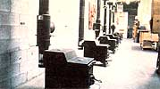
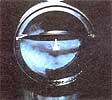
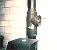
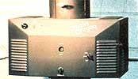
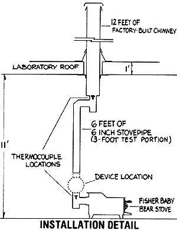
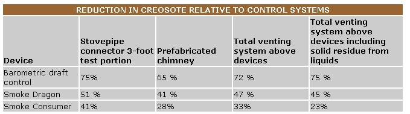

In the last issue of MOTHER we described a research project, which was then underway, that we hoped would allow us to evaluate the creosote-reducing effects of three add-on devices for woodstoves. In the ensuing two months we completed the testing, and can now report the outcome of our research.
The three pieces of equipment tested were a typical barometric draft control (made by Steinen of Carolina, Inc.), the Smoke Dragon catalytic afterburner, and the Smoke Consumer filter. For the sake of those readers who might have missed the first article, we'll begin by briefly describing the products and reviewing the testing procedures.
Barometric draft controls (see the accompanying photos for examples of all three tested products) are designed to prevent excess draft, and are usually installed in the stovepipe between the appliance and the chimney. The primary working part of such a device is a hinged and weighted flap that's closed when there's no fire in the stove. During operation, however, suction will pull the flap open when the draft exceeds a preselected value. This lets room air into the chimney, which prevents the draft from becoming greater than the chosen setting (adjustments can be made by moving the weight attached to the flap).
The Smoke Consumer consists of a knitted wire mesh filter attached beneath a cast-iron plate. The assembly can be rotated to lie either at a right angle to or parallel to the smoke flow . . . just as can a simple stovepipe damper. When the filter is closed (set across the flow), much of the flue gas moves through its passageways (a little smoke does flow around the device, in the space between the plate and the stovepipe wall). The manufacturer claims that the Consumer works by filtering out particles . . . consequently, the wire mesh requires periodic cleaning. Recommended maintenance includes a "continuous burn reactor cycle" once each daywhich involves running the stove hot enough to burn material off the filterand a weekly manual cleaning of the mesh.
The Smoke Dragon is a catalytic afterburner and heat exchanger that's designed to ignite smoke as it escapes from the stove. The catalytic combustorwhich is manufactured by Corning Glass Works-is a ceramic honeycomb structure, about six inches in diameter and three inches long, coated with a very thin layer of a noble-metal catalyst (such as platinum and/or palladium).
Essentially, the catalyst lowers the ignition temperature of the smoke from around 600°C (1,112°F) to roughly 260°C (500°F). Thus, if the gas is hot enough, and if it contains adequate oxygen, much of the escaping material will be burned in and just above the catalyst. Furthermore, once the Dragon begins working, it will continue to burn some gas even if the smoke temperature entering the device falls somewhat . . . because the heat generated by the burning smoke in the combustor warms the incoming fumes enough so that they, too, will ignite.
The Smoke Dragon is the largest of the three products we examined. It comes equipped with a variable-speed blower, a conventional damper located above the device, and a secondary air port which delivers oxygen to the combustor.
Our approach was to expose the test installations to ten days of typical stove operation, and to use the weight changes of the chimneys as the measure of creosote accumulation. Two examples of each product were tested to insure scientific accuracy, and two controls (installations without the add-on devices) were fired simultaneously to provide a basis for comparison. (The testing was done in two stages. One series used two pairs of stoves set up with Smoke Consumers and Smoke Dragons and one pair of controls. The other included two stoves fitted with barometric draft controls, and two unequipped units . . . the same two control stoves as in the other series.)
The test devices were installed on identical woodburners (Fisher Baby Bear models) with identical chimneys (manufactured by American Metal Products Co.) and stovepipe connectors (made by Dura-Vent Corp.). Since air leakage anywhere in a stovepipe or chimney would have caused a change in the rate of creosote accumulation, we needed to be sure that no one system leaked more than any other. To keep leakage close to zero, then, all the stovepipe joints were sealed with furnace cement and/or tape . . . and fastened with sheet metal screws.
The stoves were run for 8 to 14 hours per day. Each daily schedule included a hot fire-to simulate a homeowner's morning warm-up burn-and, typically, two or three lower-power, smoky fires . . . like the long-duration burns often used to maintain temperature all day and/or through the night. The combustion air inlets on the stoves were set to achieve the same burning conditions . . . so that the smoke density, composition, temperature, and velocity would be iden tical at the flue collar of each stove. We used the appearance of the fires, the surface temperatures of the stoves, and the temperature of the smoke just below the devices as indicators of uniformity.
Thermocouples were used to measure stove gas temperatures both below and above the devices (as shown in the accompanying diagram of the installation), and the temperatures were monitored constantly, using chart recorders. If the fires began to burn in a nonuniform fashion, the fuel loads were stirred, oroccasionally-the air inlets adjusted in order to bring them back in line. During the hot fires, temperatures at the lower thermocouple averaged 325 to 350°C (617 to 662°F) . . . while those recorded in the course of the cooler, smoky burns averaged 140 to 175°C (284 to 347°F) at the same location.
Both a hardwood and a softwood were used as fuel . . . with the moisture content ranging from 11 to 21%. But for any given fuel loading, wood of the same species and moisture content was used in all the stoves.
The fuel loads weighed an average of 5 kilograms (11 pounds). At each refueling, the loads were within 10% of having the same weight, and for any given firing day, the total fuel weights were within 1% of being equal. Approximately 163 kilograms (359 pounds) of wood, altogether, was burned in each stove. Creosote accumulations were determined by weighing the stovepipe and chimneys before and after the test. At the end of ten burn days, the venting systems were carefully dismantled, weighed, dried in an oven at 200°F for two days, and then weighed again. (The oven drying removes any moisture that might be contained in the creosote.)
It was our overall intent, in designing the experiment, to maximize the effects of the devices and to follow the manufacturers' instructions. Before lighting the kindling fires each morning, all the creosote reducers were adjusted to allow maximum draft. The draft regulator flaps were closed, the Smoke Consumer filters were rotated to let the smoke pass, and the Smoke Dragon bypass dampers were opened. Once the main fuel loads were added, the devices were operated according to the following procedures.
BAROMETRIC DRAFT CONTROL: During the burning of the main fuel loads, the weights on the regulator flaps were adjusted to admit the maximum amount of air that would allow the desired firing rate to be maintained. Thus, for the smoky fires, the hinged flap was wide open much of the time. But when running the hot fires, we had to adjust the draft regulators to a partially closed position.
SMOKE DRAGON: The blower control knob was turned to the ON position as the first main load of fuel was added, in order to allow the bypass damper to close automatically once the temperature inside the device reached a critical value. The blower also started automatically, and ran at the velocity selected on the variable control. (A number of different blower speeds were used during the project. )
The operation of the Smoke Dragon's catalyst was monitored continuously with a second set of thermocouples located just below and just above the catalyst. A temperature rise (as the smoke passed through the unit) indicated that the catalyst was working, and that some smoke was being burned inside the ceramic honeycomb. The combustor usually started functioning about ten minutes after the first main fuel load was added, and continued to operate (almost all the time) until near the end of the day's testing. The temperature rise across the catalyst was typically 185 to 230°C (365 to 446°F) during very hot fires and 230 to 325°C (446 to 617°F) during low-power fires.
SMOKE CONSUMER: After the first load of fuel was added, the filters were closed, and the combustion air inlets on the stoves were then adjusted to achieve the appropriate firing rate. The devices remained in the closed position throughout the rest of each day's operation.
The results recorded for the various matching pairs of stoves were impressively uniform: Accumulations for any two woodburners equipped with the same device (or with no device) were within 3% of being identical (thanks to the high degree of uniformity in both installation and operation of the systems). Between the different pairs, however, total creosote accumulations ranged from 0.2 to 1.1 kilograms (0.44 to 2.43 pounds)!
All three tested products did prove to reduce creosote accumulation, though. The percentages of reduction in comparison to the control stoves are given in the accompanying table, and it's clear that the barometric draft regulator was the most effective of the devices tested. Its use resulted in a 65 to 75% drop in creosote buildup . . . depending on which portions of the venting system were included (see the accompanying discussion of the chimney setups, for further explanation). In addition, the creosote deposits that did form appeared to be drier-not as shiny and with a rougher surface, and consequently easier to brush out of the chimneys-than those in the other setups.
However, stove owners who install barometric draft regulators shouldn't necessarily expect to duplicate the level of creosote reduction that we observed in our test, for two reasons:
First, the venting systems in our laboratory were more airtight than are most in the real world. (We wanted to assure that the air leakage effects were the same in all the systems . . . namely, close to zero.) After all, a barometric draft control works by adding air to the flue, and leaks in a venting system will have a similar creosote-reducing effect. Thus, adding a barometric draft control to a leaky venting system won't make as much difference as will adding one to an airtight stovepipe/ chimney setup.
Second, the systems equipped with barometric draft regulators were operated in a manner that would maximize their beneficial effect (which was the overall intent for all three devices). Each draft control was set so that the flap was open as far as possible (allowing the greatest amount of dilution air to be admitted), consistent with achieving the desired burn rate. All homeowners may not operate their barometric draft regulators in this optimum (for creosote reduction) manner.
Another important factor to keep in mind about such devices is that they won't work properly unless the chimney is capable of generating excess draft. Whenever the flap is open, the draft is being reduced. Thus the more excess draft there is available in a given chimney, the more benefit can be realized from fitting it with a regulator (both in reducing creosote and in limiting draft). If you're able to achieve very hot fires, and don't chronically spill smoke into the room, then chances are good that your system has excess draft . . . most systems do.
The Smoke Dragon reduced creosote accumulations by 41 to 51%o-again depending upon which portions of the venting system were considered-which is less than the reduction achieved with the barometric draft control.
In actual household use, however, the Smoke Dragon can be expected to perform somewhat better than it did in our lab. The Dragon is intended to be installed only on top-exit stoves. The rearexit units that we used-in consultation with the product's manufacturer-slightly increased the distance that the smoke had to travel to reach the catalyst, which caused the smoke to be a little cooler and probably made the catalysts slightly less effective.
We should also mention that the Smoke Dragon does more than simply reduce creosote. Unlike the barometric draft control, it lessens creosote accumulation by burning some of the smoke. Thus a greater portion of the fuel is used than would otherwise be the case . . . improving the energy efficiency of the entire woodheating system and reducing the emission of incompletely combusted material into the atmosphere.
The Smoke Consumer's effectiveness in limiting creosote deposits ranged from 23 to 41%. The higher figure was observed in the three feet of stovepipe just above the device. But when the entire system was included (which adds the solid residue from the liquid creosote which collected in the cap of the tee below the fabricated chimney), the reduction was 23%. This means that there was considerably more liquid creosote (basically a water/creosote mixture) condensing in the chimneys above the Smoke Consumers than in the other chimneys.
Again, an individual user might well find the Smoke Consumer's performance to be somewhat better than we observed. As was true with the Smoke Dragon, the Consumer was installed a little farther from the stove than the manufacturer recommends . . . in order to keep the amount of stovepipe above the connector equal to that in the other installations. It's possible that the devices' effectiveness was slightly reduced by this arrangement, although we had no difficulty achieving the recommended surface temperatures at that location. We also found it difficult to keep the filters clean (as explained below), and if a homeowner kept the filter very clean, the unit's performance might be somewhat improved.
Unlike the Smoke Dragon, the Smoke Consumer doesn't require a minimum temperature to be effective. However, the cooler the smoke that passes through the device, the more quickly the filter will become plugged and need cleaning.
The manufacturer recommends a daily "continuous burn reactor cycle" to clean off the accumulated creosote, and we were able to achieve the stated temperature requirement for that process with each day's hot fire. By the seventh day of testing, however, the drafts in each of the systems equipped with Smoke Consumers had become very sluggish ... because creosote had partially plugged the filter, as well as the space between the unit and the stovepipe wall.
By Day 8, the fires in both the Smoke Consumer-equipped units had become difficult to sustain at a level comparable to the other stoves. The filters were clearly somewhat clogged. We made two attempts to clean them with hot fires on Day 8 (the other stoves were also operated to achieve similar hot fires), but despite the high temperatures achieved, the filters remained dirty. (It may be that once the clogging has passed a critical point, it becomes more difficult to achieve the required conditions for burning off the deposits, and that the necessary temperature may be higher than 450°F. )
We then scraped off the brownish black residue clinging to the leading edges of the filters and tapped the reactor plates to knock out loosened particles. (Manual cleaning every eight days is within the manufacturer's guidelines, particularly since our "days" involved about 12, not 24, hours of burning.) After this mechanical cleaning, the drafts were markedly improved. (In retrospect, if we had relied less on the continuous-burn reactor cycle and more on mechanical cleaning, the Smoke Consumer's performance might have been somewhat better.)
For the reasons set forth in the accompanying boxed discussion of chimney systems, we believe that the last column of our table contains the most meaningful test results. As you can see, all the devices did reduce creosote buildup: the barometric draft control by 75% . . . the Smoke Dragon, 45% .. . . . and the Smoke Consumer, 23%r. In normal household use, of course, the effectiveness figures can vary.
A barometric draft control can, then, reduce creosote substantially. And unlike the other two devices tested, its effectiveness is dependent on neither a minimum average smoke temperature nor occasional high-temperature burns to remove deposits. The regulator also (as its name indicates) controls draft. This function results in a stabilized heat output and a reduced danger of the appliance's being overfired. Stack temperatures are substantially cooler, too, a factor which can be very valuable if the chimney is of questionable safety. Furthermore, the barometric draft control is the least expensive of the three devices tested.
There are, however, potential liabilities as well. Even though draft regulators can reduce the likelihood of a chimney fire by limiting creosote accumulation, the air added by such a device if a blaze were to occur might make the chimney fire more intense. (The best way to control a chimney fire is to limit its air supply as much as possible.) And the loss of room air up the chimney is another liability . . . although its net effect on a house's heat loss is probably small.
The Smoke Dragon was also effective in reducing creosote buildup. In addition, it has the advantages of generating extra heat and reducing total emissions. Like both other devices we tested, however, the Smoke Dragon does reduce the draft to some extent, and hence will not prove satisfactory on systems with only marginal draft (or, for that matter, on fireplace stoves operated with open doors). Furthermore, the Smoke Dragon is the most expensive of the three, and requires electric power to operate. Finally, some people might be annoyed by the noise of the blower, which is considerable at high speed. . . but less noticeable when adjusted at the low setting.
The Smoke Consumer reduced creosote, too, but did so less well than the other two devices. In price, it falls between the draft control and the catalytic afterburner.
The Smoke Consumer required considerably more effort to operate and maintain than the other products tested, since it didn't always self-clean during the hot fires that started off each day's run. The manufacturer's literature specifies both 300 and 450°F as the surface temperatures needed at the filter level to assure that the deposits on the filter will ignite and burn off. (We understand, from the manufacturer, that 450°F is the current recommendation.) During our daily hot fires, the surface temperature on the devices always exceeded 300°F and usually exceeded 450°F . . . as measured with the surface thermometer supplied by the manufacturer. Therefore, our experience with the Smoke Consumer leads us to conclude that even 450°F isn't hot enough to guarantee ignition of the deposits in the filter.
When a Smoke Consumer is installed and operated in a house, part of its creosotereducing effect may be due to the recommended daily hot fires themselves (if such a procedure wasn't part of the home's daily woodheating routine before putting in the device). More intense burns-which result in more complete combustion of the smoke-not only generate less creosote, but cause high flue gas temperatures that pyrolyze or dry up the existing deposits so that they lose weight and adhere less strongly to the flue wall.
The amounts of liquid creosote that we observed in the course of our tests are, we believe, accounted for by the theories behind the design of each device. The Smoke Consumer, for example, is principally a filter for particles in the smoke . . . most of the vapors (and some of the particles) pass through or around it. In our tests, considerable quantities of the organic vapors and water vapor condensed, forming the liquid creosote mentioned previously.
The Smoke Dragon, on the other hand, destroys a portion of the organic vapors by burning them. In addition, some of the heat that's generated in the catalyst probably goes up the flue, which also decreases condensation. And finally, the secondary air that the device adds to the flue gases has a diluting effect (just as does the air admitted by the barometric draft control), and thus helps reduce creosote accumulation. For all these reasons, one would expect less condensation of creosote in the flue above the Smoke Dragon than in the flue above the Smoke Consumer.
The barometric draft control simply adds air to the smoke in the flue. Consequently, all the vapors pass through the device and up the chimney. The dilution air added by the draft regulator affects the flue gases in two ways: First, it increases the velocity of the smoke ... and second, it dilutes the gases, resulting in a lower overall concentration of unburned material in the smoke. These factors substantially reduce condensation of both water vapor and organic vapors, despite the cooler temperatures. No liquid was observed in the tees just below the prefabricated chimneys in the systems equipped with barometric draft controls . . . while there was at least some liquid in all the other systems (including the controls).
Again, a home installation may produce more or less liquid creosote than we noted. We believe, however, that the most meaningful results of our project are those that concern the creo sote in the whole venting system . . . including the solid residue from liquid creosote. In many-if not mosthousehold installations, liquids that condense in the flue will evaporate and/or solidify before they're seen by the homeowner. The liquid creosote condenses more readily in the cooler parts of the system, and the condensate then flows down the flue until the volatile components are driven out by the higher temperatures found in the lower parts. The water evaporates . . . as do some lower molecular weight compounds.
Our test installation had a tee high in the system (in order to catch creosote falling or dripping from the insulated chimney). Without the tee, we believe the solid residue we obtained by heating the liquid condensate to drive out the water would have accumulated in the stovepipe connector. We've therefore considered this solid residue as part of the total creosote buildup in the venting system.
One of the major claims made by the Smoke Consumer's manufacturer is that a chimney fire is less likely to occur because of the device's flame-quenching and spark-trapping effects. We didn't test those effects in this project, so it's possible that the Smoke Consumer could offer benefits in addition to creosote reduction.
Regardless of any flame-quenching and spark-trapping capability, however, we believe that the unit's "continuous burn reactor cycle" itself could ignite chimney fires in some cases. As the filter collects particles, the draft is reduced . . . and it may become necessary to tilt the filter open slightly to get afire capable of igniting the deposits on the filter. (This is suggested by the manufacturer.) During the attempt to achieve a blaze intense enough to burn out the deposits, we think that a chimney fire could accidentally be started. (Since there was substantial creosote accumulation in the chimney above the Smoke Consumer, as there was above the other two devices, chimney fires are possible despite the creosote reduction brought about by the use of such products.)
The Smoke Consumer also requires a substantial amount of operator attention: It is automatic in neither operation nor maintenance. Manual cleaning -which the manufacturer suggests be done roughly once a week for maximum filtration efficiency-isn't as easily accomplished as the literature states. We resorted to scraping deposits off and tapping particles out with the filter in place, but for thorough cleaning, the filter must be removed from the reactor plate . . . a procedure we found difficult.
In addition, the Smoke Consumer restricts the draft in the chimney . . . as do both the other devices we tested. Thus, as the manufacturer points out, it should not be used where draft is marginal.
We might mention, too, that both the Smoke Dragon and the Smoke Consumer had some small quality-control and/or engineering problems that made them somewhat inconvenient or annoying. The Smoke Dragons made an irritating buzzing noise at very high temperatures. And the handles on the Smoke Consumers required daily tightening since the nuts slipped loose when we attempted to open and close the filters . . . especially when the creosote deposits caused the filters to stick in the closed position. In fact, it was occasionally necessary to open the access doors and apply force directly to the filter housings to get them to rotate.
Finally, it's important to bear in mind that none of the devices completely eliminated creosote accumulation. Frequent chimney inspections and cleaningswhen necessary-are essential, regardless of what reduction method is used.
In conclusion, then, all three devices did reduce creosote accumulation . . . with the barometric draft control being the most effective and the Smoke Consumer the least (again, performance in a home installation could vary). As pointed out earlier, the tested products also differed in a number of other important regards, including cost, ease of operation and maintenance, and the possible safety hazards presented by their use. These other considerations won't be of equal importance to all people who own woodstoves, so it's impossible to declare one product the best overall. We've tried to present a balanced and complete report ... you'll have to consider the information carefully before deciding which-if any-of the products is best for you.
We'd like to thank the manufacturers of the Smoke Dragon and the Smoke Consumer for their assistance in this project . . . specifically, for contributing their products and for their helpful suggestions. We would also like to acknowledge partial funding support from American Metal Products Company.
Jay Shelton is the director of Shelton Energy Research, an independent laboratory specializing in research, testing, and product development in the area of wood and coal heating. Claudia Lewis is a Research Associate.
For a free list of the laboratory's publications and more information on completed research projects (dealing with dilution air, chemical chimney cleaners, barometric draft controls, catalytic combustion, and creosote, wood species and moisture content), please send a stamped, self-addressed envelope, to Shelton Energy Research, Dept. TMEN. P.O. Box 5 :35, Santa Fe, New Mexico 87502.
There are several manufacturers of similar barometric draft controls. The one we testedmade by Steinen of Carolina-is available from hardware stores for about $25.
The Smoke Consumer retails for $117.95 (or $77.95 for a do-it-yourself kit, the Smoke Consumer Jr.) and can be purchased through a woodheating store or directly from the manufacturer, Lincoln Works, Inc., Dept. TMEN, 190 Millers Falls Road, Turners Falls, Massachusetts 01376.
The Smoke Dragon has a suggested list price of $350 . . . write or call Penn Stove, Dept. TMEN, Mifflin County Industrial Park, Lewiston, Pennsylvania 17044, 7171242-1460.
|
 |
 |
 |
|
 |
 |
 |